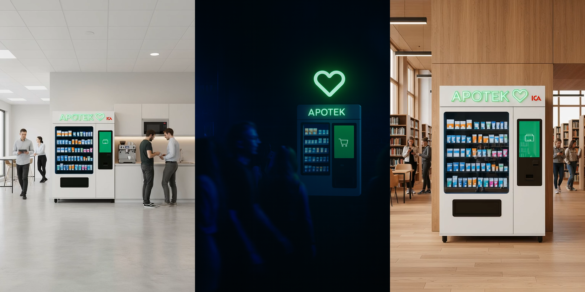

Apotek Hjärtat Mini
The brief was to find ways Apotek Hjärtat can innovate and use their existing strengths to tackle the difficulties they face in the digital market.
Insight
The Swedish pharmacy market is weakly differentiated, and online is growing fast. Price pressure in e-commerce makes it hard for Apotek Hjärtat to grow profitably in that channel. But they have something their online competitors don't: a national physical presence.
In urgent self-care situations, that presence changes everything. A headache at work, allergies at the park, sunscreen on the beach. Waiting for delivery is not an option, and the nearest pharmacy might be a detour people won't make. The choice shifts from "who has the lowest price" to "who can help me right now."
Strategy
Use Hjärtat's physical reach to capture demand that e-commerce cannot serve. Be available in the moment, convert that into app adoption, and build brand familiarity through real-world visibility.
The concept
Hjärtat Mini is a network of small, unmanned pharmacy vending machines placed where self-care needs arise. Each machine is stocked with products specific to its environment. A machine at the beach carries sunscreen and after-sun. One at a nightclub carries pain relief and rehydration. The assortment matches the moment.
The machines are built to last. A replaceable protective film keeps each unit looking fresh. Card payment is tap-only, with no slot or reader that can be jammed or vandalised. Fewer moving parts means fewer points of failure.
Every machine is topped with Apotek Hjärtat's glowing heart symbol, easy to spot from a distance. The goal is for people to learn to look for that heart when they need help.

Why Hjärtat
Apotek Hjärtat operates more than 400 pharmacies across Sweden and is owned by ICA Gruppen, which runs over 1,300 grocery stores nationwide. No competitor has the same infrastructure to move first, and this is a largely unexplored space in Sweden.
Validating the concept
Two claims need to hold up. The machines must capture demand that wouldn't otherwise reach a Hjärtat pharmacy, and customers acquired through them must go on to use other Hjärtat channels.
A pilot can test both in an area where Hjärtat already has stores and historical sales data. If existing channel sales stay flat while the machines generate additional revenue, that points to new demand. If a meaningful share of those customers later purchase through other Hjärtat channels, the machines are working as an acquisition tool.
Some locations might not be be profitable on their own. In those cases, the value is strategic: brand presence in the right moment. Whether that cost is justified depends on what those customers turn out to be worth over time.